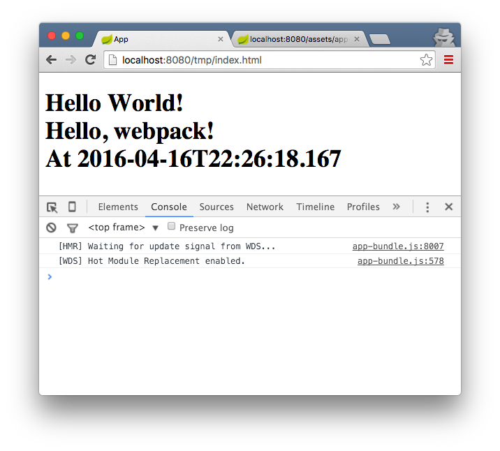

Serving a Webpack bundle in Spring Boot
Intro
This post demos an example of using Webpack to bundle a frontend project and Maven to package it up in a jar and include it in a Spring Boot app to serve it.
The example in its final state is up on Github.
Getting started
We’ll start by creating the 3 following projects:
- parent
- fe
- be
parent is just a convenient way to package both our other 2 modules up in one go. It only consists of the following pom.xml file:
1 | <project xmlns="http://maven.apache.org/POM/4.0.0" xmlns:xsi="http://www.w3.org/2001/XMLSchema-instance" xsi:schemaLocation="http://maven.apache.org/POM/4.0.0 http://maven.apache.org/xsd/maven-4.0.0.xsd"> |
That way we can mvn clean install and it will install both our other 2 modules.
The frontend
fe will be our frontend module. It’ll mostly feature JavaScript technology, but since we’re aiming to include this in a Spring Boot app, we’ll need to package it up in a jar file. We’ll be using the frontend-maven-plugin to do this as shown in fe/pom.xml below:
1 | <?xml version="1.0" encoding="UTF-8"?> |
The gist is that this plugin will install Node and npm as well as our npm dependencies, and build the project via npm run build. As you can see, we’re specifying the Node and npm versions to install. These exact versions are downloaded if not found in the project in question irrespective of which versions of this software may (or may not) already exist on the machine you’re building on (making for repeatable builds on different machines).
Next, we’ll define our build npm script in our package.json:
1 | { |
We’re simply running webpack -p to build for production (i.e. the bundle will be minified). Once you install the npm dependencies listed here (either through the Maven plugin or by running npm install), you’ll get a local copy of webpack in your node_modules directory. In node_modules, you’ll also get a .bin directory housing any scripts specified as binaries in any installed node modules.
So for instance, node_modules/webpack/package.json has the following file specified as a binary:
1 | "bin": { |
This means there will be a link to the file node_modules/webpack/bin/webpack.js in node_modules/.bin/, and this link will have the name webpack (the key used in the bin object above).
Additionally, anything in node_modules/.bin will be on your PATH when you run the npm scripts specified in your package.json. i.e. webpack will be on your PATH when you run npm scripts through npm such that you don’t need to do the following:
1 | "scripts": { |
You can simply use webpack. npm effectively alters your environment before running the scripts you tell it to run.
But Webpack needs to be configured to do anything for us - so we’ll do that next (fe/webpack.config.js):
1 | var packageJSON = require('./package.json'); |
We’re specifying ./app/index.js as our entry point. This script, along with anything else it pulls in by requireing it, will be bundled up in a file named app-bundle.js in the directory: __dirname + '/target/classes/META-INF/resources/webjars/fe/0.0.1-SNAPSHOT'.
This might seem like a peculiar output destination. By choosing target/classes, Maven will include Webpack’s output in the final product for this module, the jar file. We could have chosen something like src/main/resources which would have had a similar effect, but then running mvn clean would not delete Webpack’s output (something we want to do when cleaning).
In passing, note the /META-INF/resources part of the path we’re using. Containers implementing the Servlet 3.0 specification should be able to serve assets in a jar’s /META-INF/resources without any configuration. However, we’ll be explicitly serving our Webpack build via Spring configuration.
Next, let’s write some simple code just to have something to bundle up:
fe/app/index.js:
1 | var greeter = require('./greeter'); |
fe/app/greeter.js:
1 | module.exports = { |
Notice how in fe/app/index.js we’re guarding against not having a document object. This isn’t really necessary as we intend to write a frontend app, but it’s interesting to note how we can get this code to work outside the browser. It is still an npm package and we could publish it to a private or public registry and re-use it elsewhere - maybe in an app that doesn’t use this module as a frontend.
Running mvn clean install should now give you the jar we’ll be using from our backend.
The backend
Our backend’s pom.xml:
1 | <?xml version="1.0" encoding="UTF-8"?> |
With the pom in place, we can start our configuration in be/src/main/java/com/tmp/App.java:
1 | package com.tmp; |
It’s mostly annotation driven:
@SpringBootApplication = @Configuration + @EnableAutoConfiguration + @ComponentScan.
@EnableWebMvc = Adds the configuration in WebMvcConfigurationSupport which you can then override as necessary.
I’m also adding some superfluous things like implementing ApplicationListener<ContextRefreshedEvent> to log out the active profile when the ApplicationContext gets initialized or is refreshed (i.e. to log on server startup). We don’t actually need this, but I’ll be going off on a bit of a tangent when using the webpack-dev-server later in this post. We’ll then need to enable CORS from our Spring Boot server. Hence, I’m logging out the active profile on start up to show the environment the server is running in (as CORS will only be enabled if the server is running in dev mode). Plus I just like logging things like this on startup.
For more on logging info on app startup you might be interested in this (what originally got me to start doing this in Spring apps).
Our configuration continues in be/src/main/java/com/tmp/WebMvcConfig.java which is responsible for configuring beans to do with the web side of things:
1 | package com.tmp; |
We’re adding 2 static asset resource handlers. Our server will look in classpath:/META-INF/resources/webjars/ for any requests starting with /webjars/. So when our fe project is all packaged up and on the classpath, since it contains the following file: META-INF/resources/webjars/fe/0.0.1-SNAPSHOT/app-bundle.js, a request such as http://localhost:8090/webjars/fe/0.0.1-SNAPSHOT/app-bundle.js should serve that file as expected.
But doing so will only get you a bunch of JavaScript source code displayed in your browser - which is why I’ve added an “anything else” pattern (i.e. /**) and mapped it to search in classpath:/public (another example of this here).
Now, since the contents of src/main/resources in Mavenized projects end up packaged in your jar file, we can put our static assets (like index.html below) in be/src/main/resource/public/ and they will be served from the classpath by our server:
1 | <!DOCTYPE html> |
One final thing, add application.properties to src/main/resources:
1 | spring.profiles.active=dev |
This gets picked up auto-magically via Spring Boot configuration.
At this point you should be able to start up the server (either through your IDE or by running mvn clean package && java -jar ./target/be-0.0.1-SNAPSHOT.jar in be), hit http://localhost:8090/index.html and get “Hello World!” back.
You will notice that leaving off the index.html part of the URL will break things. We can quickly fix this by following the advice in this SO answer by Dave Syer.
i.e. we can add the following to WebMvcConfig (note: if you’re using the spring-boot-devtools and it’s still not working after adding this change, try manually re-starting the server):
1 | @Override |
webpack-dev-server
Fast feedback is cool and healthy. We currently have a process to bundle our fe app into a jar and serve these assets via our Boot app, which is great when we’re all done developing our frontend code. However, it’s not something you want to do while actually building your frontend code as it’s too time consuming and soul crushing.
You might consider writing a simple Express app and serve your Webpack generated bundles from it while developing. At least you’d skip the Maven build. That would be a start. You’d also need to watch files and build them with Webpack unless you fancy manually running Webpack when you’re done changing files and possibly re-starting the Node server (unless this dev server is not caching the built files).
Good thing this Express based server is already written for us. It’s called webpack-dev-server and we’ll use it to serve Webpack’s output as we make changes to our code. (Note: in case you already have an Express app and you want to bake in Webpack’s file watching and bundling, you can use the webpack-dev-middleware).
To start the dev server you first need to install it. As we’ve listed it as a devDependency in our package.json above, you could run it with ./node_modules/.bin/webpack-dev-server, or you could install it globally with npm i -g webpack-dev-server (after which you can just run webpack-dev-server to run it).
Of course, before running the server, our frontend code needs to run on a web page so we’ll need some kind of HTML file to require the bundle we’re building through Webpack. To do this, we could use the html-webpack-plugin, but for the sake of transparency, we’ll add the following in fe/tmp/index.html:
1 | <!DOCTYPE html> |
Now you might be wondering where assets came from? It’s the output.publicPath we’re still missing in our webpack.config.js, and which you can add like so:
1 | // ... |
From the docs, publicPath is the path from which the webpack-dev-server will serve the bundles created by Webpack:
The Webpack Dev Server also uses this to determine the path where the output files are expected to be served from
(Note: I used /assets/ to keep with the example in the docs. In our case, since our HTML is in the tmp directory, it would probably make more sense to set the publicPath to /tmp/. The src in our script tag would then be a simpler: app-bundle.js).
We’re finally ready to see this in action. Assuming you’re in fe, run the server with the –inline and –hot arguments: webpack-dev-server --inline --hot (you might want to add this as an npm script as we’ve done with build above).
You should now be able to hit http://localhost:8080/tmp/index.html and get:

http://localhost:8080/assets/app-bundle.js is the request our HTML file makes to get the bundle built by Webpack. Note that this is content which is served from memory i.e. when using webpack-dev-server bundles like app-bundle.js are not saved to disk. They are (re)generated on file changes (the files which make up our bundles). If you want to hit the disk, you can run Webpack itself - not the dev server - as we have through npm above.
Now, notice the console output in the screen shot above. If you have that, then hot module replacement is in place and you can go ahead and change fe/app/index.js or fe/app/greeter.js and see the changes in your browser after saving and without re-loading the page… WIN!
CORS in development
Things are looking good. There is, however, one issue we’ll have to face as soon as our app graduates from the “hello world” level. Since our frontend assets are being served from a different server than the one serving our backend data (on a different port), we’re going to have to enable CORS requests originating from localhost:8080 (our webpack-dev-server).
Doing so is simple enough in Spring Boot. Just add the following to be/src/main/java/com/tmp/WebMvcConfig.java:
1 | @Bean |
So, when our server is running in dev mode, any requests to /api/** coming from http://localhost:8080 will be allowed.
Next, if we want to try this out, we’re going to need at least one REST endpoint to work with:
be/src/main/java/com/tmp/GreeterController.java:
1 | package com.tmp; |
This is straightforward enough. We can hit /api/greetings/{name} with an optional {name} path parameter and get back some JSON.
Finally, we can change our client (fe/app/index.js) to something like the following:
1 | var greeter = require('./greeter'); |
You can try commenting out and undoing the CORS configuration in our Spring app to see it’s effect in the browser as shown below (Note: you don’t need to restart the Spring Boot server either thanks to the spring-boot-devtools plugin):

Finally, to wrap things up, we can cd into our parent project and run mvn clean install to package and install our fe and be. You can then run the be jar with:
java -jar ./$PATH_TO_JAR/be-0.0.1-SNAPSHOT.jar --spring.profiles.active=prod
where $PATH_TO_JAR is either be/target or its location in your local maven repo.
Hitting http://localhost:8090/index.html should give you the same output as when running with both servers.